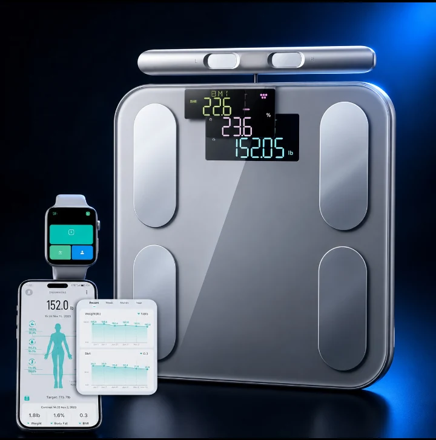
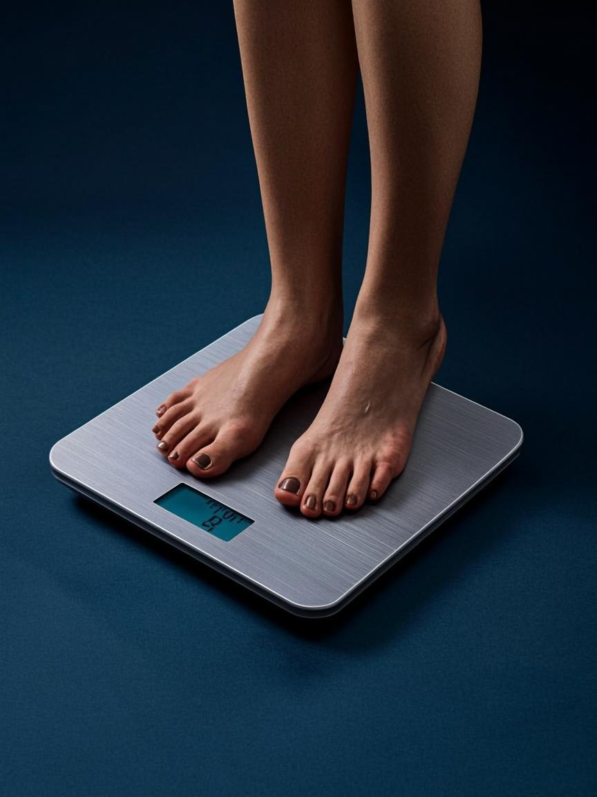
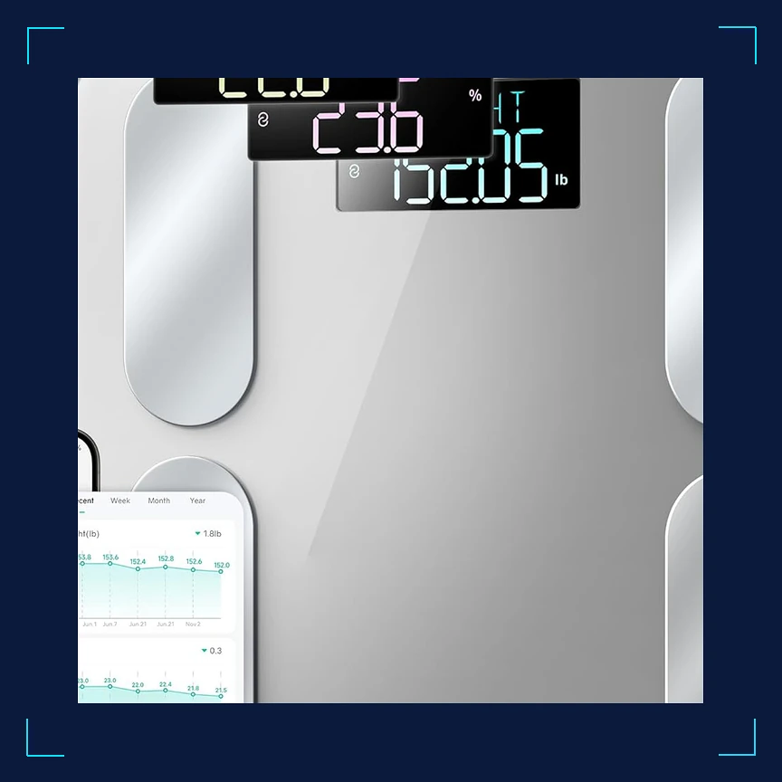
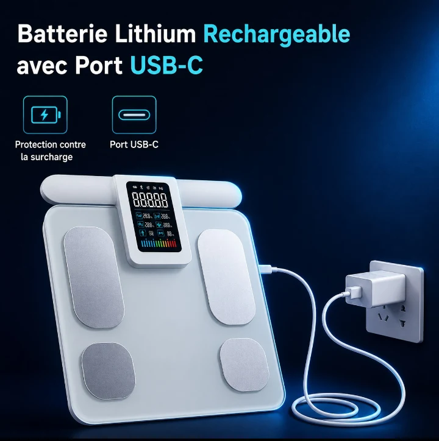

1 / 4




Balance impédancemètre connectée : 13 indicateurs corps, 8 utilisateurs, électrodes ITO
Vos coordonnées de livraison
* Champs obligatoires. Paiement sécurisé ci-dessous.
Paiement sécurisé
Livraison offerte en Europe — Retours 30 jours — Garantie 2 ans — Support expert 7j/7
Votre tranquillité d'esprit, notre priorité
"Je ne savais pas que mes données pouvaient révéler autant sur ma santé"
"Les premières données m'ont ouvert les yeux sur ce que je ne remarquais pas"
"J'ai pu adapter ma routine grâce à des mesures concrètes et fiables"
Montez sur une balance classique, elle vous donne un chiffre. Ce chiffre ne distingue pas un kilo de muscle d'un kilo de graisse. Il ne vous dit pas si vous êtes déshydraté, si votre masse osseuse diminué, ou si votre graisse viscérale — la plus dangereuse — augmenté en silence. Le poids, c'est le résumé d'un livre dont vous ne lisez que la couverture.
La Scale-Master Pro utilisé la bioimpédancemétrie pour décomposer votre corps en 13 indicateurs distincts. À chaque pesée, elle envoie un faible signal électrique à travers votre corps via les électrodes ITO — des capteurs en oxyde d'indium-étain dont la conductivité dépasse celle de l'acier classique. Résultat : des estimations de composition corporelle suffisamment fiables pour suivre des tendances sur des semaines et des mois.
La graisse sous-cutanée, on la voit. La graisse viscérale — celle qui entoure les organes abdominaux — est invisible mais bien plus dangereuse. C'est elle qui augmenté le risque de diabète, de maladies cardiovasculaires et de syndrome métabolique. La Scale-Master Pro est l'une des rares balances grand public à estimer ce paramètre. Un score de graisse viscérale qui grimpe au fil des semaines, même si votre poids reste stable, est un signal que votre miroir ne vous enverra jamais.
C'est le scénario le plus frustrant : vous vous entraînez, vous mangez mieux, et le poids ne bouge pas. Ce que la balance classique ne dit pas, c'est que vous êtes peut-être en train de perdre 2 kg de graisse tout en gagnant 2 kg de muscle. La Scale-Master Pro sépare ces deux évolutions. Après un mois de suivi, les courbes de l'application montrent des tendances que le poids global masque complètement — et c'est souvent là que la motivation revient.
Avec 8 profils utilisateurs et une reconnaissance automatique, la Scale-Master Pro s'adapte à toute la famille sans configuration fastidieuse. Chacun retrouve ses courbes dans l'application, avec des recommandations personnalisées. Le mode bébé permet de peser les nourrissons en les tenant dans les bras. Le mode athlète ajuste les calculs pour les corps très musclés. Un seul appareil, toutes les situations.
"En deux mois de suivi, j'ai vu ma masse grasse baisser de 1.8% alors que mon poids restait stable. Sans les 13 indicateurs, j'aurais cru stagner. L'application montre les vraies transformations que la balance classique ne détecte pas."
"Toute la famille l'utilisé, six profils enregistrés. La reconnaissance automatique fonctionne bien pour quatre d'entre nous. Les électrodes ITO sont nettement plus précises que notre ancienne balance à pieds métalliques."
"Design élégant, verre trempé solide. L'indicateur VFC est un plus inattendu pour une balance. L'application peut être lente à la synchronisation parfois, mais les données une fois chargées sont exploitables."
Bague connectée titane — sommeil, VFC, SpO2 24/7
458 EURTensiomètre brassard connecté — mesures automatiques 3x/jour
120 EURMoniteur ECG portable + oxymètre — ECG en 30 secondes
169 EURThermomètre infrarouge — lecture en 1 seconde, sans contact
45 EUR